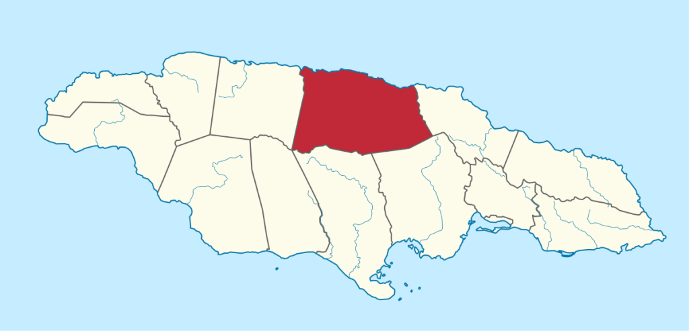
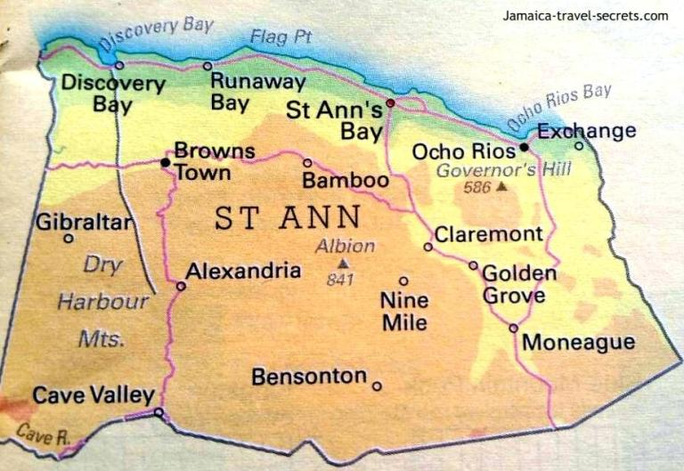

Welcome to ST. ANN
Let me introduce you to my parish.
 St. Ann, the garden parish. It is the largest parish in Jamaica and one of the most interesting one on the island.
| Data | Answer | Fun Fact |
| Name | St Ann | St Ann was first named Santa Ana by the Spaniards |
| History | May 4,1494 | One of the oldest populated areas in the island of Jamaica. |
| Size | 1,212.6 km | St Ann was named after Ann Hyde, wife of James II, King of England and is recognized as the largest of all the parishes. It is known as 'The Garden Parish' for it's bauxite, agriculture and livestock production and it's tourist attraction. |
The home of one of our national heroes
Marcus Mosiah Garvey, he was the founder and first
President-General of the Universal Negro Improvement
Association and African Communities League, through
which he declared himself Provision President of
Africa
"Never forget that intelligence rules the
world and ignorance carries the burden. Therefore remove
yourself as far as possible from ignorance and seek as far
as possible to be intelligent"
-Marcus Garvey